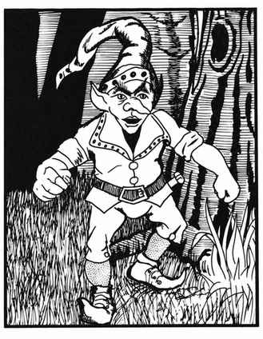

棕精灵 · Brownie
 |
|
布朗尼是半身人的远亲（或许是半个半身人、半个精灵），但体型更小，也少见得多。它们基本上友善待人，也喜欢矮人、精灵和半身人；但生性害羞，难得现身，偏爱安静的田园环境。若能友好相遇，布朗尼有 50% 的概率愿意帮助守序善良的角色。它们能轻松制作或修理木器、皮革制品、金属器具等，也很擅长带路。
布朗尼每天可各施展一次下列法术：防护邪恶术、腹语术、舞光术、恒定光亮术、镜影术（3 个镜像）、困惑术和任意门术。它们通常只携带短剑。布朗尼的感官格外敏锐，从不遭遇突袭，并拥有 18 点敏捷。它们能迅速融入周围环境，借助天然掩护和速度达到隐形效果，也可借此逃离。
除了自己的语言和阵营语之外，布朗尼还会精灵语、皮克精语，以及树精和半身人的语言。